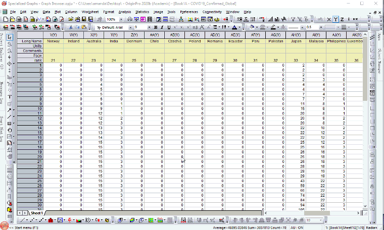

FAQ-1045 データセット全体のグラフをすばやく閲覧する方法は？
Browse-Graphs-Accrossing-Datasets
最終更新日：2020/04/09
Origin 2020bから、一連のグラフをすばやく閲覧するためのグラフブラウザをサポートしています。以下のように操作します。
- 全てのデータセットを同じワークシートに用意します。
- メニューの作図：ブラウザを選択します。
- 左側のパネルを使用して、さまざまなデータセットを切り替えます。

キーワード:ナビゲートグラフ, プロット比較, ブラウザグラフ